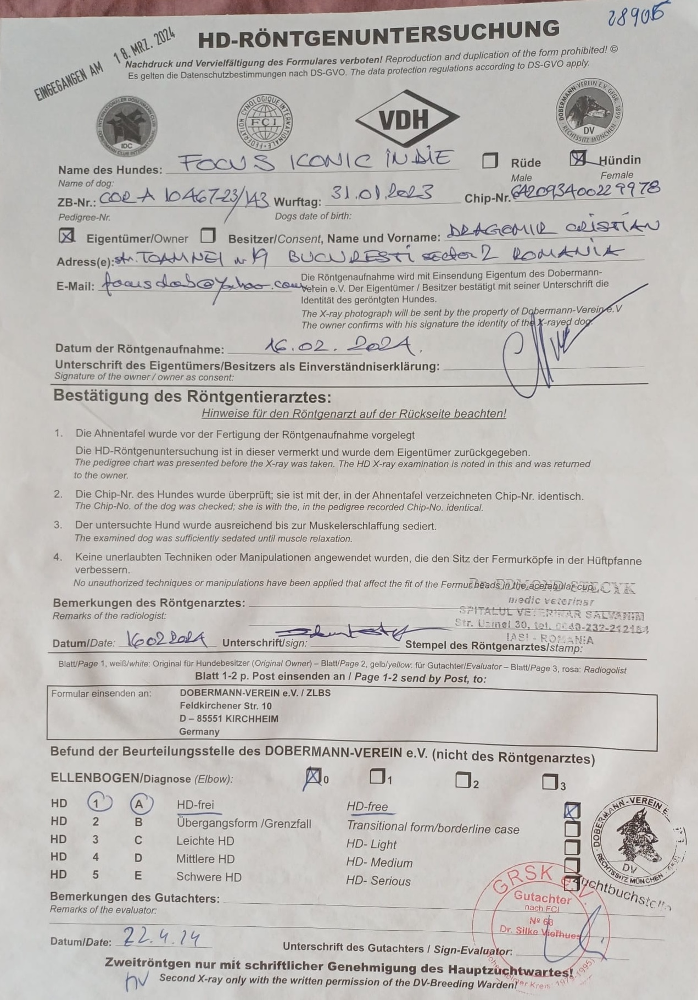
Rezultate HD de la Dobermann Verein
Indie, Joyce și Jump: A, A și respectiv B — toate în limitele pentru reproducere.
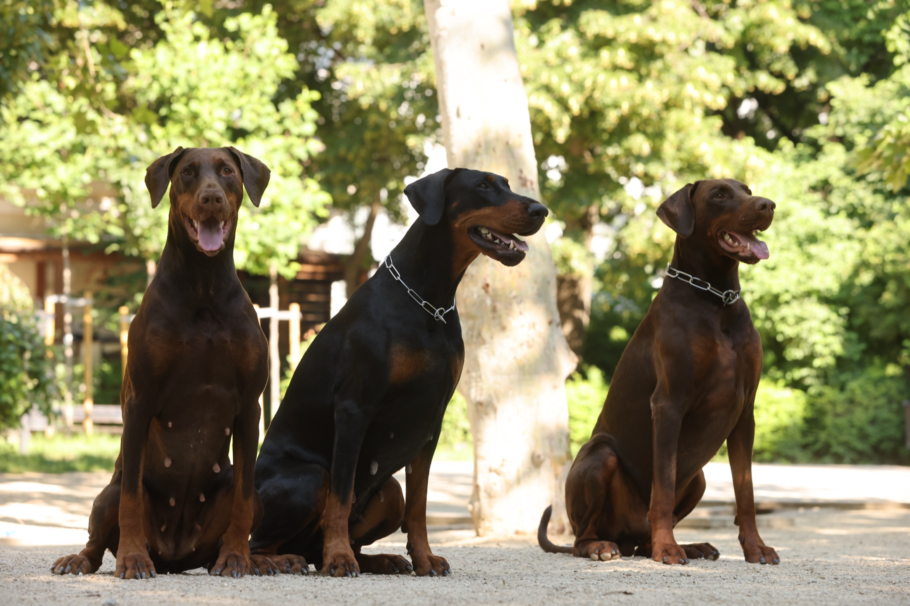
Trei decenii de selecție pentru un Dobermann echilibrat, sănătos și frumos. Pui crescuți cu grijă, din părinți testați.
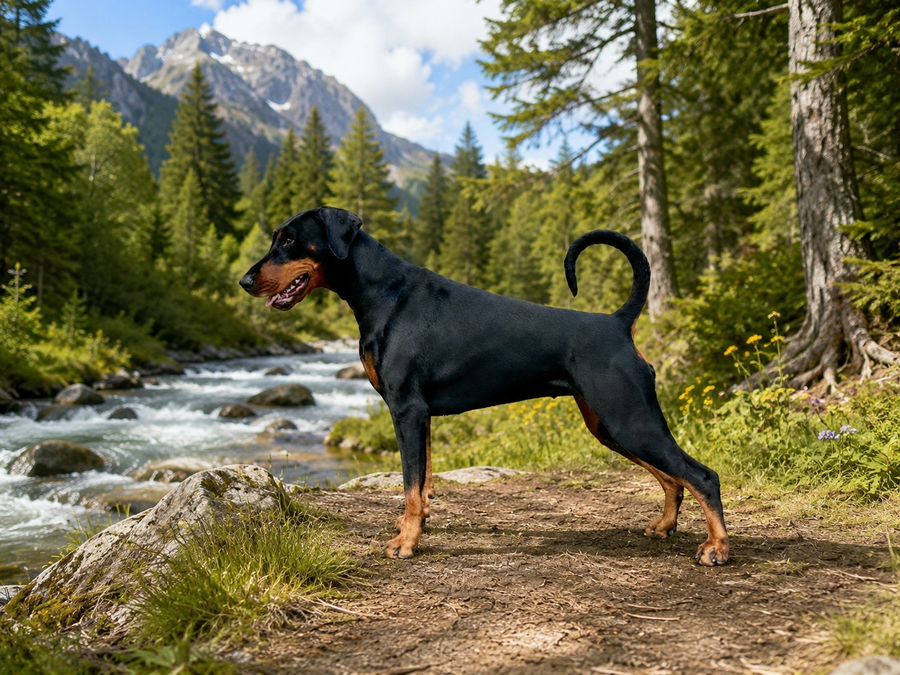
NouUn nou cuib Focus este pe drum: sarcina a fost confirmată. Urmează detalii despre părinți și despre lista de așteptare. Mai multe știri în curând.
Vezi cuiburile →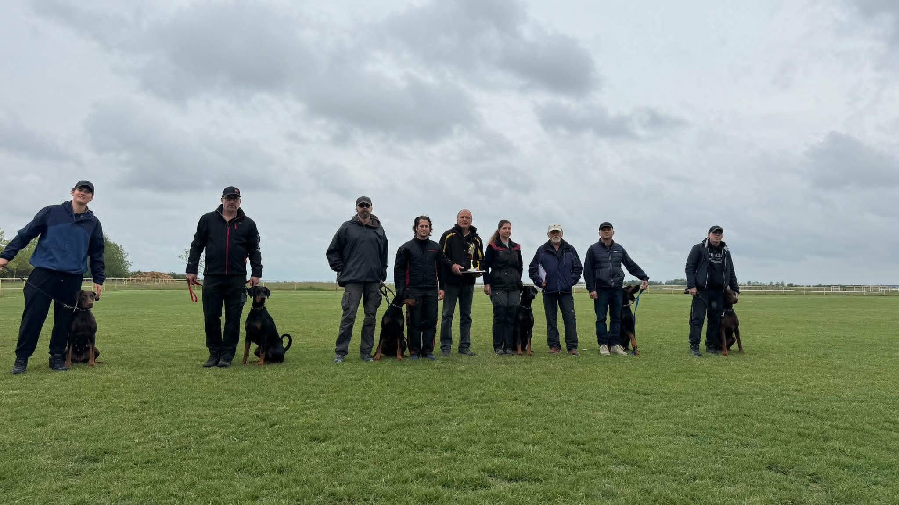
Indie, Joyce și Jump au promovat ZTP cu nota maximă — V1A. Joyce a fost desemnată Best ZTP.
De ce contează ZTP →
Indie, Joyce și Jump: A, A și respectiv B — toate în limitele pentru reproducere.
Câini de lucru, evaluați la ZTP și BH, cu sănătatea testată oficial. Apasă pe oricare pentru profilul complet — titluri, sănătate și arbore genealogic.
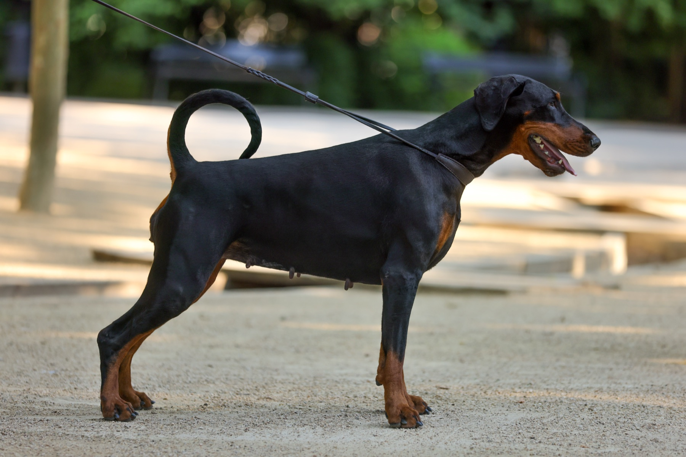
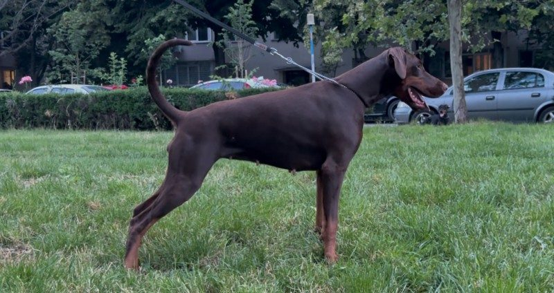
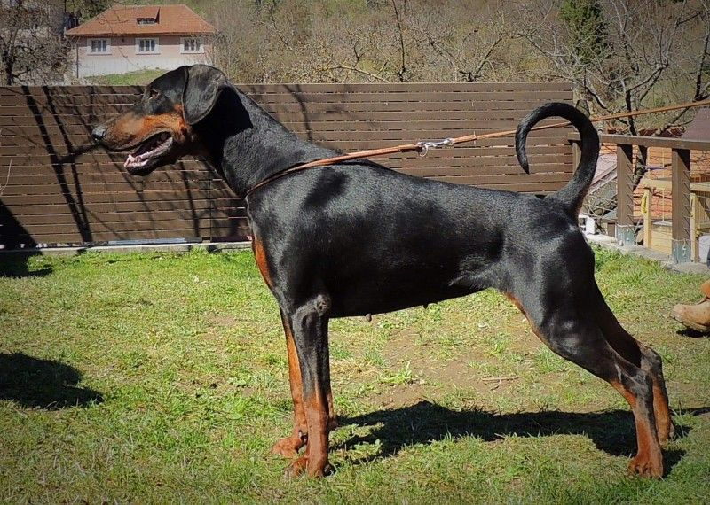
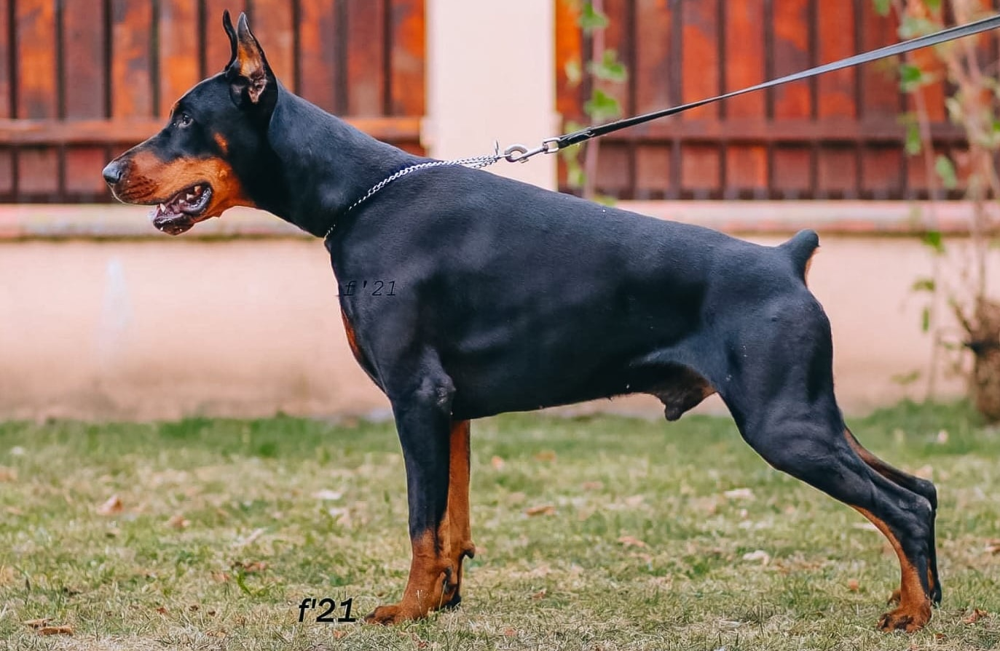
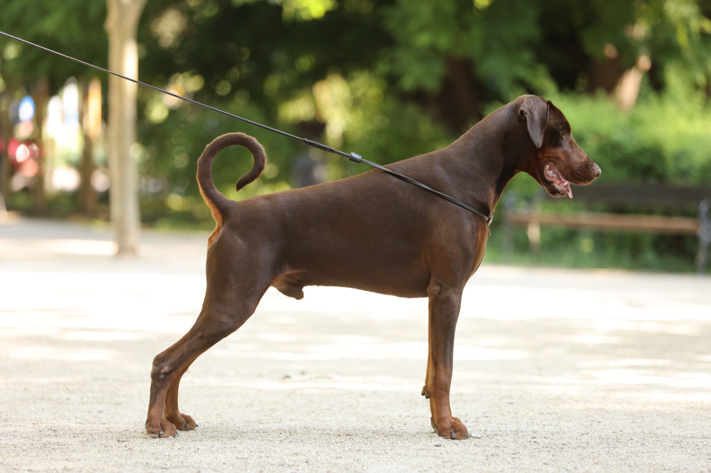
Câini care au definit linia noastră și nu mai sunt în programul de reproducție. Unii sunt încă alături de noi, retrași și răsfățați la pensie; alții s-au stins, dar rămân în fiecare generație care le poartă amprenta. Statusul fiecăruia e marcat clar.
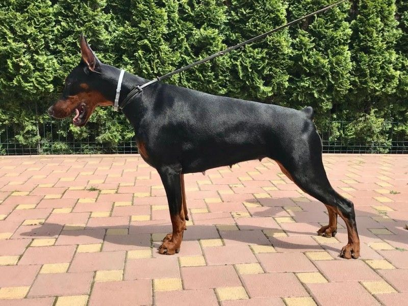
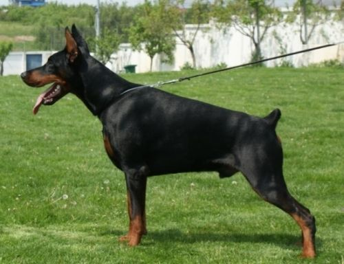
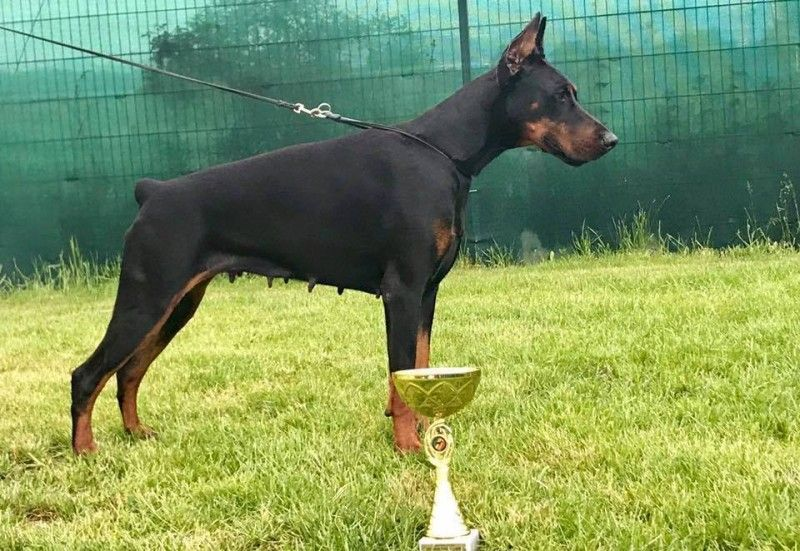
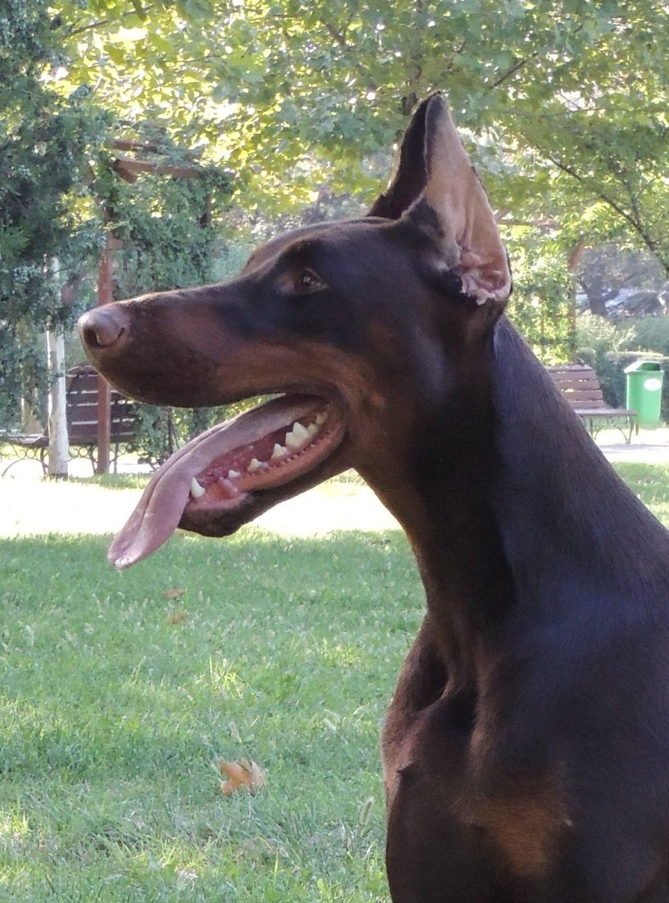
Pentru disponibilitate, vizite sau întrebări despre linia Focus, scrie-ne. Răspundem fiecărei cereri serioase.